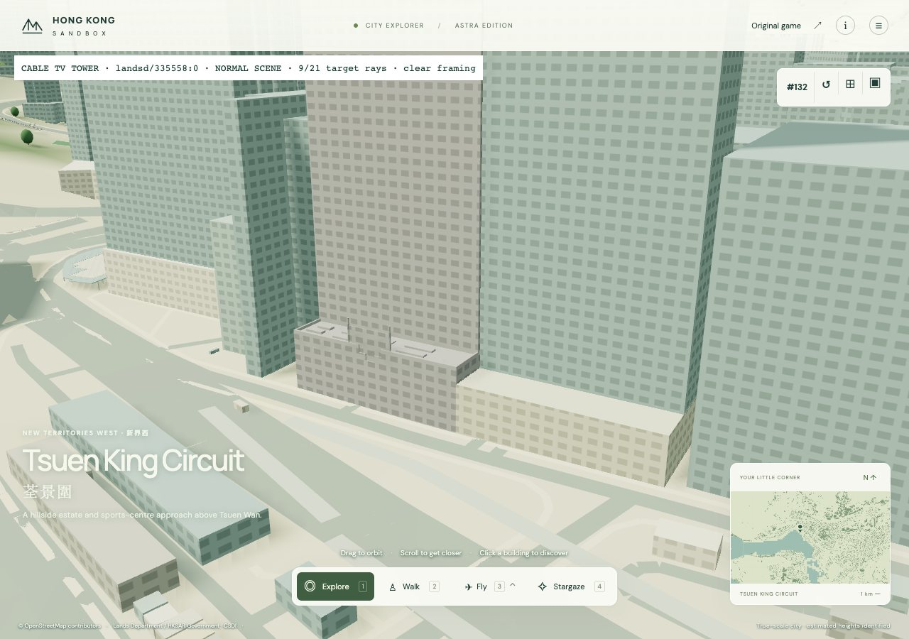
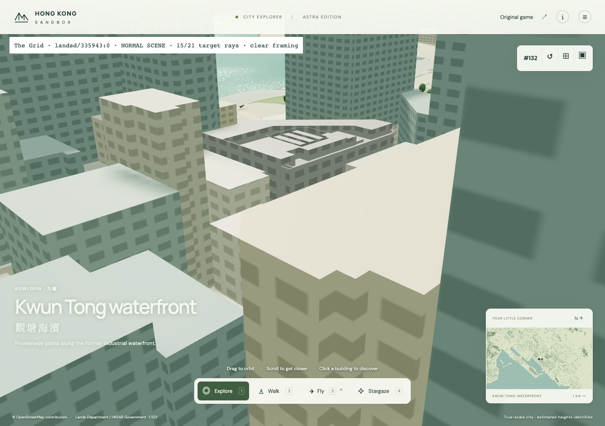
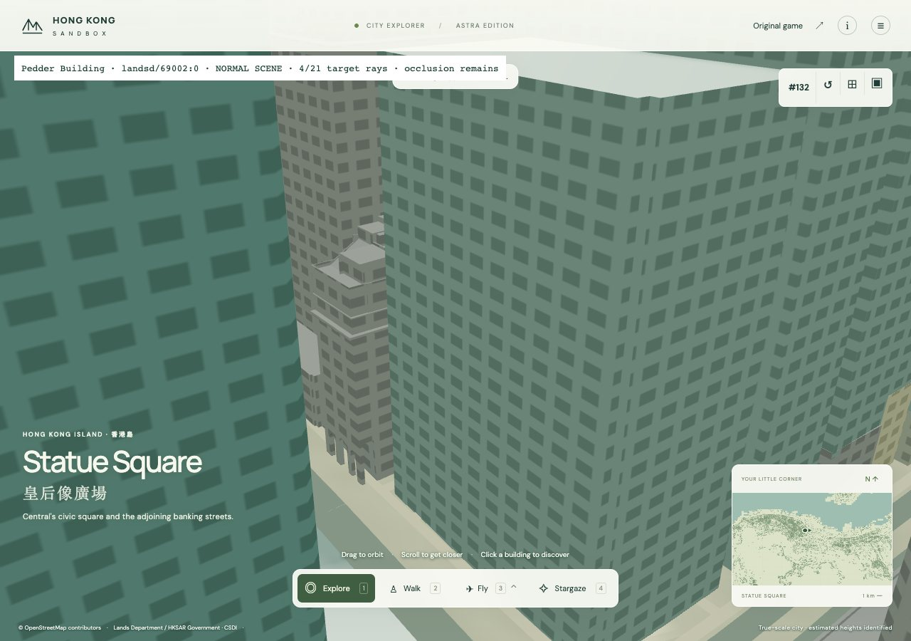
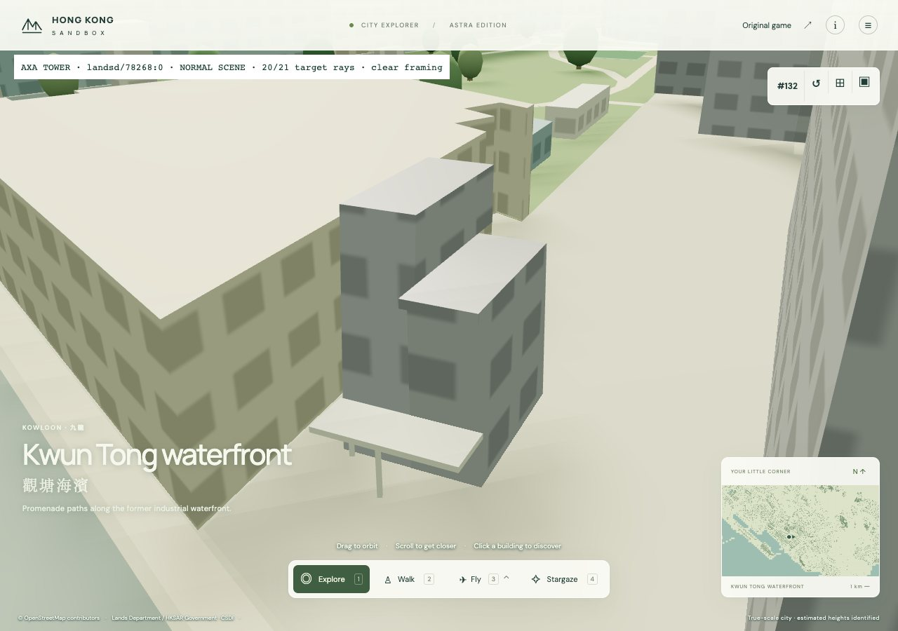
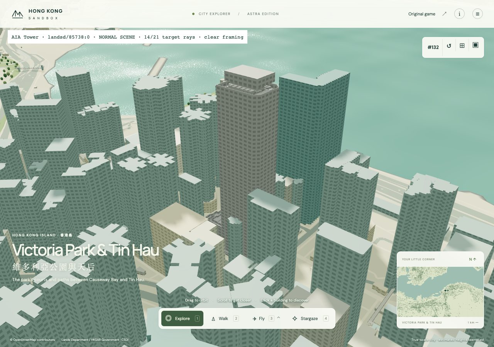
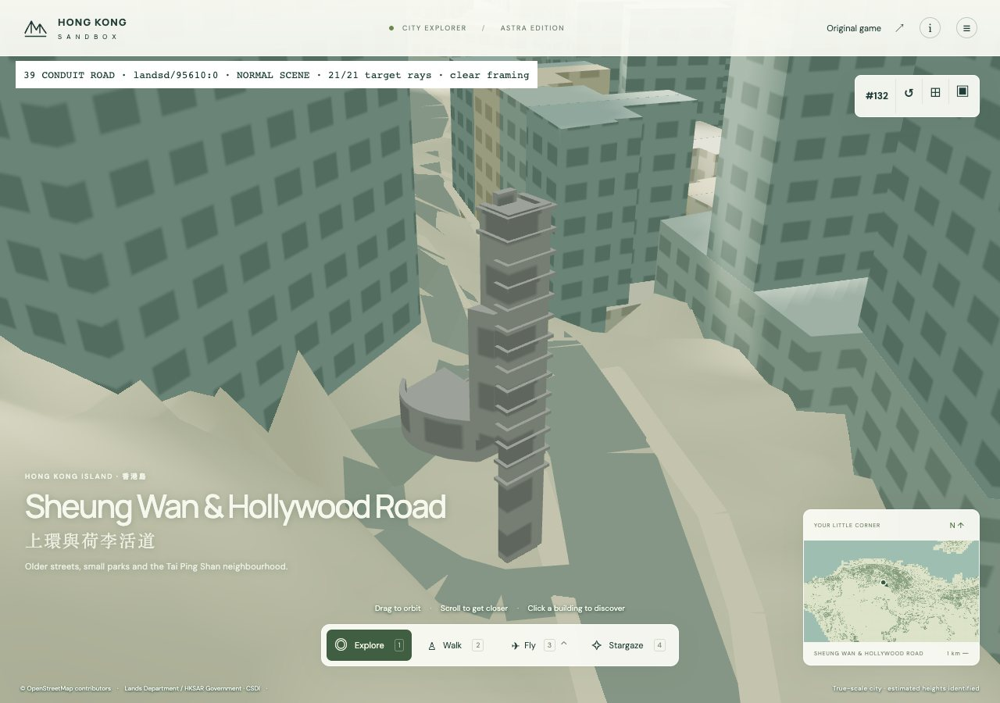

scene · camera clear · 9/21 source rays

scene · camera clear · 15/21 source rays

scene · framing held · 4/21 source rays

scene · camera clear · 20/21 source rays

scene · camera clear · 14/21 source rays

scene · camera clear · 21/21 source rays